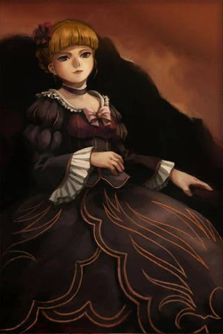

La Regla del Tablero
El sitio web anterior ha sido descartado por completo. Era una ilusión innecesaria, un intento ruidoso de llenar la pantalla con funciones que no aportaban nada al vacío.
He decidido dejar solo este fragmento plano. Un espacio sobrio, monocromático, libre de distracciones. A veces, la simplicidad de la tinta negra sobre el fondo absoluto es la única forma de verdad que nos queda.
Verdad Roja y Azul
Al igual que en el juego de las brujas, el código que escribimos responde estrictamente a las reglas que decidimos creer. Si no hay una intención genuina detrás de lo que construyes, la arquitectura colapsa ante la primera duda.
No hay milagros en este fragmento. Solo un par de viñetas que eventualmente desaparecerán de la caché.